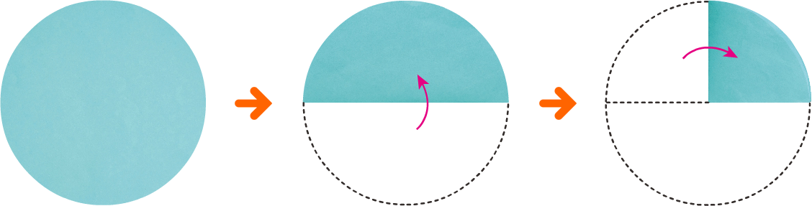

- 개념정리
- 1
- 2
- 3
- 4
- 5
-
삼각자를 대었을 때
삼각자의 모서리와
꼭 맞게 겹쳐지는 각을
직각이라고 해! -
1 그림을 보고 안에 알맞은 말을 써넣으세요.
종이를 반듯하게 두 번 접었을 때 생기는 각을이라고 합니다.직각 -
2 와 같이 직각을 모두 찾아 로 표시해 보세요.
-
3 삼각자를 이용하여 주어진 점을 꼭짓점으로 하는 직각을 완성해 보세요.
꾸러미 1 -
4 다음 글자에서 찾을 수 있는 직각은 모두 몇 개인지 구해 보세요.
개7 -
5 일기에 나오는 시각 중에서 시계의 긴바늘과 짧은바늘이 이루는 각이 직각인 시각을 찾아보세요.
4 16 토오늘 우리 가족은 놀이공원에 다녀왔다.10시에 도착해서 놀이 기구 3개를 타고 12시에 점심을 먹었다.놀이 기구를 더 탄 후 3시에 집으로 출발했다.정말 즐거운 하루였다.3시